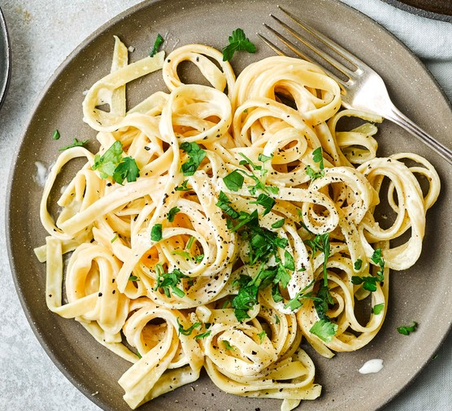

Fettucine

Description
Fettuccine is a long, flat, and thick pasta that's commonly served with a creamy sauce. This classic Italian dish is simple to make and always delicious.
Ingredients
- 1 pound fettuccine pasta
- 1/2 cup unsalted butter
- 2 garlic cloves, minced
- 2 cups heavy cream
- 1 cup grated Parmesan cheese
- 1/2 teaspoon salt
- 1/4 teaspoon black pepper
- 1/4 cup fresh parsley leaves, chopped
Steps
- Bring a large pot of salted water to a boil. Add the fettuccine and cook for 8-10 minutes, or until al dente. Drain the pasta and set it aside.
- While the pasta is cooking, melt the butter in a large saucepan over medium heat.
- Add the minced garlic to the saucepan and cook for 1-2 minutes, or until fragrant.
- Pour the heavy cream into the saucepan and bring the mixture to a simmer.
- Reduce the heat to low and simmer the sauce for 5-7 minutes, or until it has thickened slightly.
- Add the grated Parmesan cheese, salt, and black pepper to the saucepan. Stir until the cheese has melted and the sauce is smooth.
- Add the cooked fettuccine to the saucepan and toss it with the sauce until it's coated.
- Serve the fettuccine hot, garnished with chopped parsley leaves. Enjoy!
Homepage